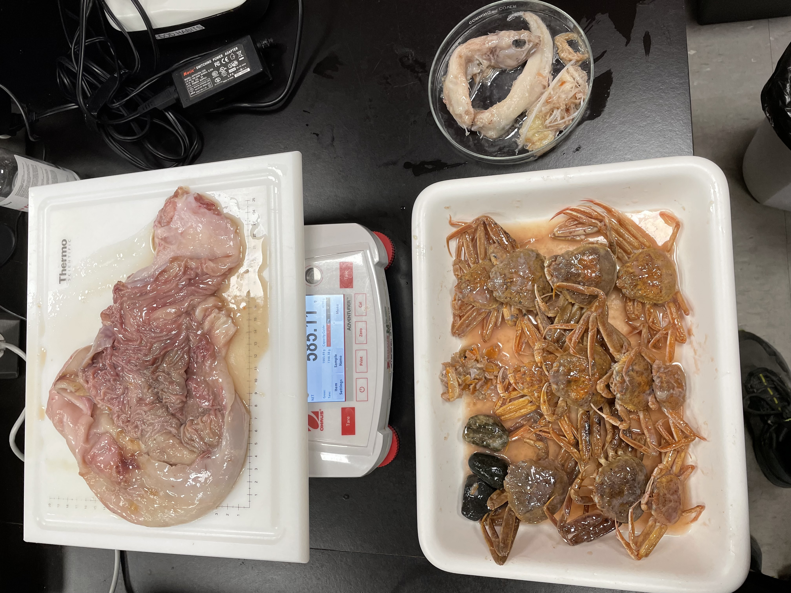
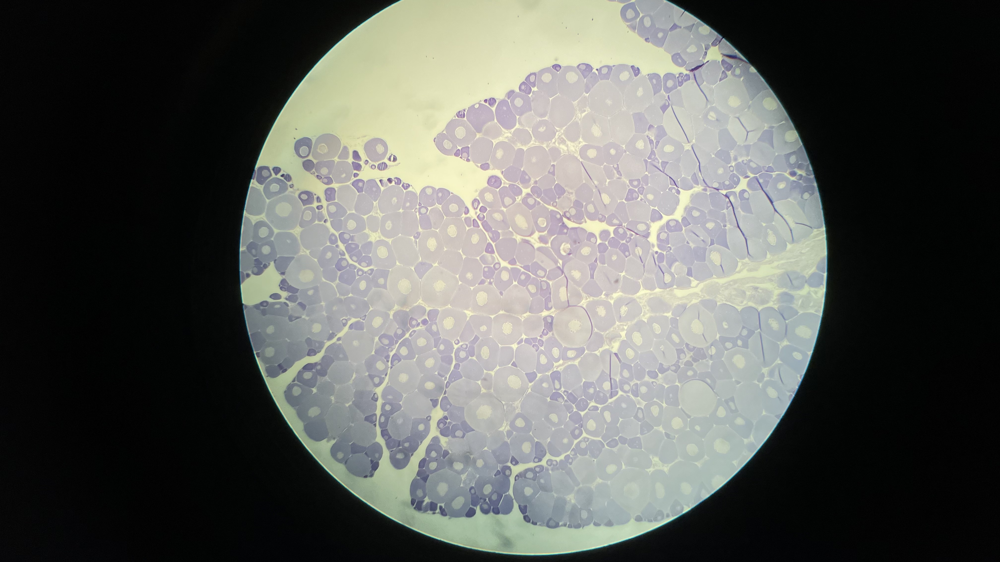
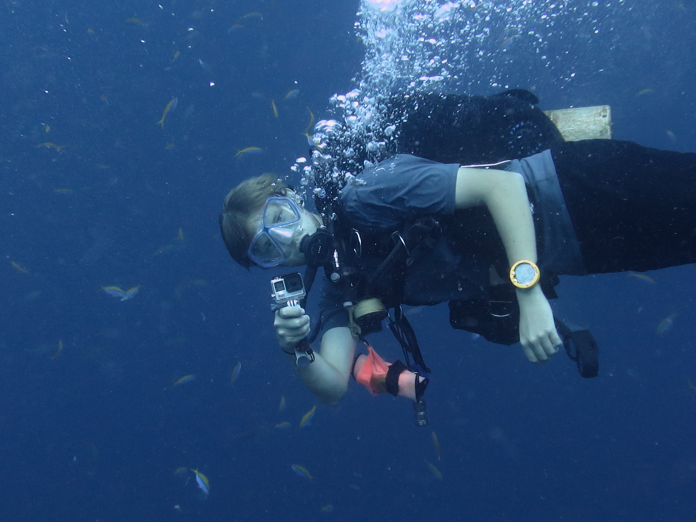

Cheers!!

My name is Sebastian Glindtvad and originally from Denmark, where I took my Master of Science in Marine Biology. I am currently a PhD student at the Marine Institute in St. John's, Newfoundland, Canada, studying the trophic ecology and Reproductive biology of the Atlantic halibut (Hippoglossus hippoglossus). If you want to reach out to me, you can email me on Sebastian.Glindtvad@mi.mun.ca, or find me on LinkedIn .
My PhD Projects
The Atlantic halibut

Atlantic halibut (Hippoglossus hippoglossus) is a species member of Pleuronectidae family (righteye flounder), able to measure more than 2 meters long, it is the worlds largest flatfish. It is a highly valuable commercial species in the northwest Atlantic, especially within Canadian fisheries, and has, as a population, increased remarkable after a point of near collapse in the 1990's. Yet, despite its commercial value and remarkable recovery, little research on the species trophic ecology exists and knowledge of their reproductive biology is also limited. As part of my PhD, I am trying to shed light on these specific parts of the Atlantic halibut biology, using tools and methods such as diet obtained from stomach content over a two decade period, stable isotope analysis of eye lenses and histological methods for maturity estimation and auto-diametric analysis for fecundity.
Trophic Ecology
The trophic ecology of Atlantic halibut has seen some, though limited, studies over the last centery. Of the studies conducted, many are spread across the whole Atlantic, making it difficult to apply the knoweldge gained in Canadian waters due to differences in prey diversity. I am using diet data obtained from the annual Fisheries and Oceans Canada (DFO) Summer RV Surveys. A survey that has been conducted since the 1970's, it's primary focus has been to collect abundance data for stock assessment and management purposes. Since 1999, it has collected Atlantic halibut stomachs, creating a 2 decade long time series of diet information for the species in the maritime region of Nova Scotia. Additionally, in 2021, samples of eye lense layers along with muscle and stomach tissue were taken for bulk stable isotope analysis, providing some of the first trophic information on an individual life time scale. The aim for the project is to use the diet and stable isotope information to inform on the species trophic ecology, both on a decadal, spatial and individual scale.
Reproductive Biology of Atlantic halibut
The construction of a maturity ogive curve is a corner stone in many stock assessment models to estimate recruitment of the following year. For more advance modelling of recruitment, the knowledge of fecundity is included, something that may prove much more necessary than previously thought due to hyperallometric relationship between an individuals size and number of eggs the produces. Such maturity ogive curves are generally constructed from macroscopic inspection of gonads on fishing vessels and reserch surveys during the spawning season. However, there are discreptioncies between macroscopic method and examining gonad tissue under a microscope after histologically processing the tissue. Over the course of two years, I have gathered 1000+ gonad samples from three different NAFO areas, where the 3NOPs4VWX5Ze Atlantic halibut stock is thought to spawning. After microscopic examination of these samples and using the auto-diametric method, I should be able determine if there are spatial variations when halibuts reach maturity and egg production.
Hobbies
My favourite hobby is flyfishing, but my other hobbies include diving (both SCUBA and Freediving) and drone flying.
